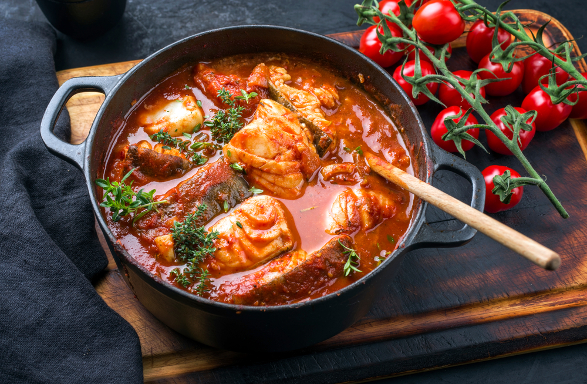

Moqueca de Peixe

Description
Moqueca de Peixe is a flavorful Brazilian fish stew that is popular in the Northeast. It is typically made
with white fish, onions, garlic, tomatoes, bell peppers, and coconut milk, which gives it a rich and creamy
texture.
Ingredients
- 500g of white fish fillets
- 2 onions
- 4 cloves of garlic
- 3 tomatoes
- 2 green bell peppers
- 2 cloves of garlic
- 1 red chili pepper
- 1 can of coconut milk
- 2 tablespoons of olive oil
- Salt to taste
Instructions
- Cut the fish into large pieces and season with salt.
- In a large pan, sauté the onions and garlic in olive oil until they are soft.
- Add the tomatoes, bell peppers, and chili pepper to the pan and cook for a few minutes.
- Add the fish to the pan and cook until it is almost done.
- Pour the coconut milk over the fish and vegetables and stir well.
- Simmer the stew for a few more minutes
- Adjust the seasoning with salt to taste.
- Serve the moqueca de peixe hot with rice and/or bread.